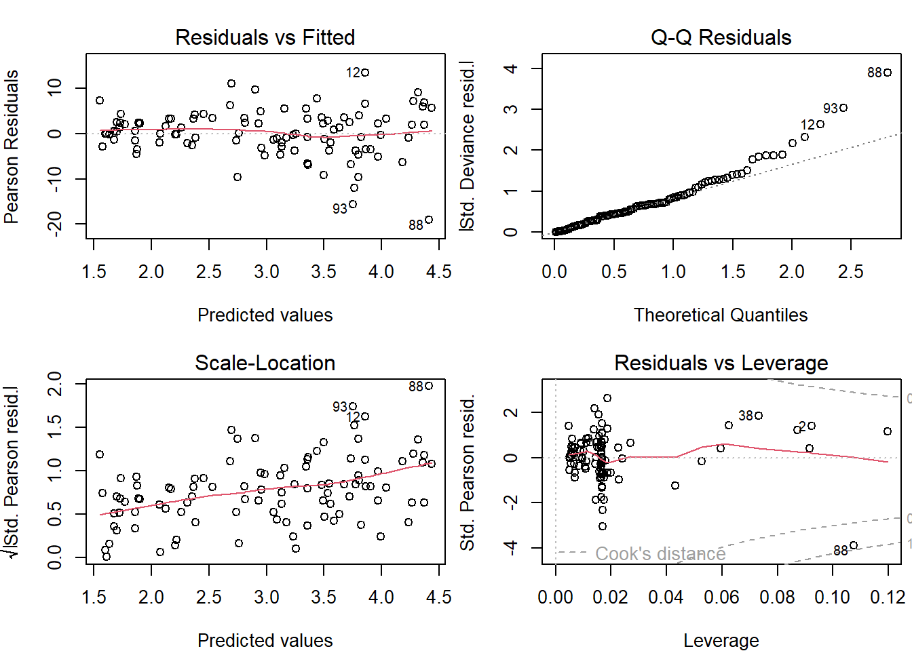

Chapter 17 Class 14: 11 11 2020 GLMs
17.1 What are GLMs
Until now we have been dealing with linear regression models, with a common set of characteristics. The variance of the residuals is constant and their distribution is Gaussian. While that is a very useful model and has been widely used for over a century to model all sorts of phenomena, these hardwired characteristics make such a model inflexible. Therefore, we need to include some more flexible models in our toolbox.
Generalized linear models come to help, as they will generalize the Gaussian linear model in three fundamental ways:
They will relax the assumption that the residuals of the model are Gaussian, by allowing the user to specify different families for the response variable. These families will be from the Exponential family of random variables. While this is perhaps confusing wording, it is important to note that this should not to be confused with the Exponential distribution, which happens to be a special case of a Gamma random variable. The Gamma happens to be, like the Poisson or even the Gaussian, one of the distributions from the exponential Distribution.
They become more flexible than the standard Gaussian linear model by allowing the relation between the response and the linear predictor to be mediated via a link function. This link function adds another very useful feature: the predictions from the response variable can be constrained to take only admissible values. case in point, a probability can be constrained to be between 0 and 1, and a weight can be constrained to be strictly positive, by choosing an appropriate link function.
The use of a link function induces a complication that often confuses practitioners. We can now have predictions on the scale of the link function, but also predictions on the scale of the response. While the predictions on the scale of the link function are the default in R, these mean often very little in practice, and humans will have trouble understanding them. There might be a good reason why predictions from a GML based on the omnibus R function predict.glm are by default on the scale of the link function, but to be fair I find this to be the exception need, not the rule, when doing applied work.
In the LM case we had, for \(K\) independent variables, the following formulation for the model
\[E(y)=\beta_0+\beta_1x_1+\beta_2x_2+...+\beta_Kx_K\]
and when considering observations
\[y_i=\beta_0+\beta_1x_{i1}+\beta_2x_{i2}+...+\beta_Kx_{iK}+e_i\]
where the \(e_i\) would be Gaussian with mean 0 and a constant variance \(\sigma^2\). In the generalized linear model we can choose a family for the response variable, and we have the relation between the mean value of the response mediated by a link function, represented by \(f\), therefore
\[f(E(y))=\beta_0+\beta_1x_1+\beta_2x_2+...+\beta_Kx_K\]
and therefore
\[E(y)=f^{-1}(\beta_0+\beta_1x_1+\beta_2x_2+...+\beta_Kx_K)\]
Note that the above implies that the linear model is just a GLM with a Gaussian response and an identity link function.
It is interesting to note an often under-appreciated distinction between the Gaussian linear model and the other GLMs. While the Gaussian model implies that the residuals are Gaussian, no one knows what is the distribution of a Poisson, Gamma or Binomial GLM. This fact is often hard to grasp also because diagnostic plots produced for GLMs transform the residuals in an attempt to make them look normal. In some cases, like in the binomial case, that attempt is typically doomed from the start!
While the choice of the right link function is fundamental for a GLM’s performance, that is often an easy decision since the key aspect is to insure only admissible estimates from the model. Arguably the most common link functions are the identity, the log and the logit.
17.2 The link function
Here we talk about link functions
Illustrate how a link function can be used to ensure that a prediction only returns admissible values
a<-0.04
b<-0.08
par(mfrow=c(2,2))
xs<-seq(-30,20,by=0.01)
plot(xs,ilogi(lp(a,b,xs)),ylim=c(0,1))
abline(h=0:1,lty=1)
xs<-seq(-30,20,by=0.01)
plot(xs,ilogi(lp(0.9,12,xs)),ylim=c(0,1))
abline(h=0:1,lty=1)
xs<-seq(-3,2,by=0.01)
plot(xs,ilogi(lp(0.9,12,xs)),ylim=c(0,1))
abline(h=0:1,lty=1)
xs<-seq(-1,1,by=0.01)
plot(xs,ilogi(lp(0.9,12,xs)),ylim=c(0,1))
abline(h=0:1,lty=1)
17.3 Most useful GLM Families
These are arguably
- Gaussian - the standard for continuous data;
- Gamma - an alternative to the Gaussian for strictly positive data, like lengths, weights or animal densities;
- Beta - still an outsider, but clearly under-appreciated, as it can be invaluable to model responses that are probabilities (Douma and Weedon 2019). Not to confuse when one wants to model the probability of successes of yes or no events; see below, for that the Binomial is the omnibus candidate.
- Poisson - the default count model, but quite inflexible as it implies that the variance is equal to the mean, which is the exception rather than the norm for ecological count data;
- Binomial - the default model for yes/no or presence/absence data, also useful to model under-dispersed (var<mean) counts, which are rare in biology/ecology
- Negative Binomial - the default candidate for over-dispersed (var>mean) counts; an alternatives for over-dispersed counts is the quasi-Poisson (Ver Hoef and Boveng 2007)
In recent years flexible families like the Tweddie distribution, that include several of the above, have been gaining ground in the Ecological literature.
17.4 An example analysis
We begin by simulating data from a real GLM model. We simulate data from a Poisson regression. Note the difference between what is required now and the way we would simulate data before, in the Gaussian case. While before we would simply add the errors to the expected value given the linear predictor - since we knew the distribution of the errors to be Gaussian, by assumption, this is no longer possible because once the family becomes not Gaussian we do not know what is the distribution of the residuals. Therefore, to simulate data from a non-Gaussian GLM implies a two stage process:
- First we generate the linear predictor, and then
- we apply to the linear predictor the inverse link funcion, and finally mean value of the response, and then
- we simulate data from the appropriate distribution (e.g. below Poisson), conditional on the corresponding mean.
We simulate some data, and pretend these would correspond to the weight of a lizard, in grams, as a function of the length of the lizards, in mm. Please, don’t double check my numbers, they probably do not add up for any reasonable species of lizard, but that is a detail in this story.
set.seed(121)
#define sample size
n<-100
#get a predictor variable
low<-30
high<-90
xs1<-runif(n,low,high)
#get a second potentially predictor
#not used
#xs2<-rgamma(n,10,10)
#define linear predictor
lp1<-0.01+0.05*xs1
#get the mean value
Eys1<-exp(lp1)
#get actual data
ys1<-rpois(n,Eys1)and then we plot the data

Note that, while the model is linear on the scale of the link function, the relationship is not linear on the scale of the response. This illustrates some additional flexibility compared to the Gaussian linear model. The fact that the model is linear on the link scale is easily perceived from the code, and illustrated below:

Now, we can fit some models to data using the function glm. Note just as for the lm function we need to define the formula that represents the model, and we need to use the argumet data to let lm know where to find the variables. The novelty lies in the family argument, that sets the assumed distribution for the response.
Here we fit 3 models, the real model, a Poisson response with a log link, and 2 wrong models, the standard linear model (both with lm and glm with Gaussian response, to illustrate once again these are one and the same), and the Gaussian model with a log link function. The latter assumes Gaussian errors, but forcing predictions to be strictly positive.
lm1A<-lm(ys1~xs1)
lm1B<-glm(ys1~xs1)
glmPoi<-glm(ys1~xs1,family=poisson(link="log"))
glmGau<-glm(ys1~xs1,family=gaussian(link="log"))We can look at the outcome of these overlaid on the data. The fundamental aspect when predicting from a glm model is that we need to be careful with the type argument. By default the predictions are on the scale of the link function, hardly helpful for you as a practicioner. Hence, you need to set type="response". I can’t say I’d be a millionaire if I had a penny every time a student could not understand the predictions of a glm model because they are looking at predictions on the link scale, but I would nonethelss probably be able to buy a decent meal!
plot(ys1~xs1)
xs<-seq(low-5,high+5,by=0.5)
novosdados<-data.frame(xs1=xs)
predslm1A<-predict(lm1A,newdata=novosdados)
predslm1B<-predict(lm1B,newdata=novosdados)
predsglmPoi<-predict(glmPoi,newdata=novosdados,type="response")
predsglmGau<-predict(glmGau,newdata=novosdados,type="response")
lines(xs,predslm1A,col=2,lty=2,lwd=3)
lines(xs,predslm1B,col=3,lty=3,lwd=3)
lines(xs,predsglmPoi,col=4,lwd=2)
lines(xs,predsglmGau,col=5,lty=2,lwd=2)
legend("topleft",legend=c("Linear model via lm","linear model via glm","Poisson GLM","Gaussian GLM"),lwd==c(3,3,2,2),col=c(2,3,4,5),lty=c(2,3,1,2),inset=0.05)
As expected, the linear model does the wrong thing. it was the wrong model, and it even produces inadmissible values. As an exemple, a lizzard with 30mm length would be estimated to have -5.98 grams, and I guess you have never seen a lizard of negative weight! Both the Poisson and the Gaussian with the log link provide the same predictions. So are they equivalent? Not really, bacause the different response assumptions imply that the variances around predictions will be different too.
So how could we have spotted the Gaussian was the wrong model? Well, typically we evaluate the goodness of fit of a model by a variety of ways, but visual diagnostics based on the model residuals can be especially revealing. Clearly, the Gaussian model is incorrect as the variance is increasing with the mean. This should not come to you as a surprise, since the true model was Poisson and in the Poisson the variance is equal to the mean.

On the other hand, the diagnostics for the Poisson model do not show any reasons to worry.

A really nice and interesting evaluation of model adequacy, or in other words, a different way of looking that the plots produced by default by the plot of a model object, is in the package performance, part of the easystats family
## Not enough model terms in the conditional part of the model to check for multicollinearity.## Warning: Removed 100 rows containing missing values (geom_text_repel).
Additionally, if we would evaluate the AIC for these contending models, the Poisson model would be by far the most parsimonious. We have not talked about model selection yet, but AIC is a model selection criteria that favours models that fit to the data while penalizing for the number of parameters in the model (e.g. Aho, Derryberry, and Peterson 2014).
| df | AIC | |
|---|---|---|
| lm1A | 3 | 744.8996 |
| lm1B | 3 | 744.8996 |
| glmGau | 3 | 617.3647 |
| glmPoi | 2 | 590.3504 |
References
Aho, Ken, DeWayne Derryberry, and Teri Peterson. 2014. “Model Selection for Ecologists: The Worldviews of Aic and Bic.” Ecology 95 (3): 631–36. https://doi.org/10.1890/13-1452.1.
Douma, Jacob C., and James T. Weedon. 2019. “Analysing Continuous Proportions in Ecology and Evolution: A Practical Introduction to Beta and Dirichlet Regression.” Edited by David Warton. Methods in Ecology and Evolution 10 (9): 1412–30. https://doi.org/10.1111/2041-210x.13234.
Ver Hoef, Jay M., and Peter L. Boveng. 2007. “Quasi-Poisson Vs. Negative Binomial Regression: How Should We Model Overdispersed Count Data?” Ecology 88: 2766–72.